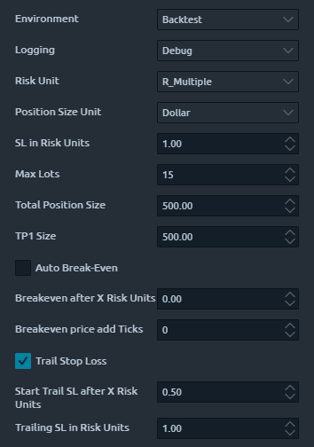
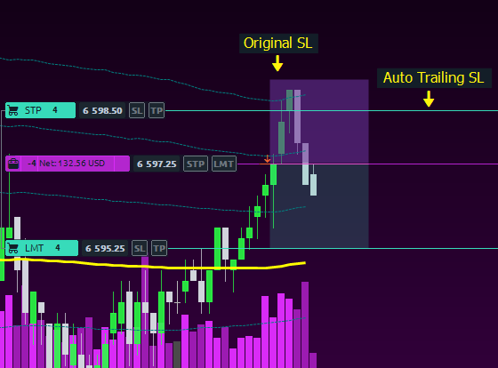
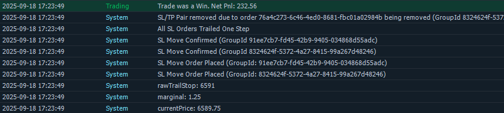
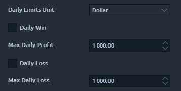
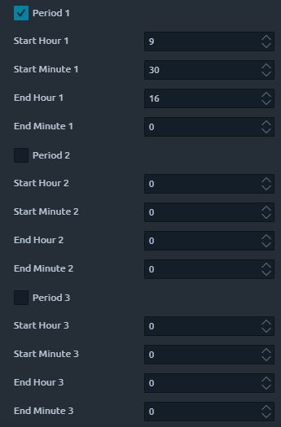

Our Unified Execution Layer
All Aurexion Labs strategies are built on a battle-tested, live execution layer that serves as the foundation for every strategy we offer. This robust platform ensures that every trade, no matter how complex, is executed with precision and consistency.
The platform is designed with advanced asynchronous handling, allowing it to manage complex scenarios such as partial fills, multi-leg executions, and dynamic order adjustments seamlessly. Traders can configure multiple legs within a single strategy, each with its own take-profit targets and trailing logic, while the system automatically manages hundreds of partial fills to ensure that allocations across all legs remain accurate.
Every execution is meticulously tracked. Partial fills are aggregated, divided correctly among strategy legs, and monitored in real time to maintain strict adherence to the user’s configuration. This ensures that no trade is left unmanaged, and every leg behaves exactly as intended.
The available features within a strategy are determined by its type. Mean reversion strategies, for example, typically operate with a single take-profit level—set at the mean of the chosen indicator such as MA orAVWAP—but still fully support trailing logic, stop-loss rules, and other risk management settings. Multi-leg strategies with multiple take-profit levels are better suited for momentum and trend-following approaches, whether intraday or on a longer time horizon.
Mean Reversion Example


New entry models can be easily integrated into the platform, allowing the system to evolve as new techniques are developed. In the future, users will also be able to connect third-party signals directly to the platform, expanding flexibility and enabling a hybrid of automated and discretionary trading. The system is also highly effective as a semi-discretionary aid: traders can manually enter positions at their discretion, while the execution engine automatically manages risk, trailing stops, and take-profits according to predefined settings.
Logging

The platform provides comprehensive, detailed logs, giving traders complete transparency into the internal workings of the execution engine. Users can review the lifecycle of each trade, analyze performance at the level of individual fills, and verify that strategies operate exactly as intended.
Daily P/L Limits

Set daily per-strategy-instance P/L limits in dollar or points. When a limit is reached (even during a trade):
- All orders and positions will be cancelled and closed
- The strategy will not be able to take any new trades until the next day
- An email will be sent to your email address
Daily trading periods

Use up to 3 different trading periods. Configurable every day if you need to. For example if you want to avoid a certain news event happening on that day. When the end of a period happens, all orders and positions will be cancelled and closed automatically. If you don't set any periods, the strategy will run perpetually (good for crypto for example, or if trading on higher timeframes)
Stable Core
By centralizing all strategies on this unified execution layer, Aurexion Labs aims for consistency, reliability, and the flexibility to implement advanced trading techniques that would be impractical on standard execution systems. Whether managing multiple legs, handling asynchronous partial fills, integrating new entry models, or connecting external signals, our platform provides the infrastructure for professional, automated, and semi-discretionary trading at the highest level. Learn more on ourAbout Us page.